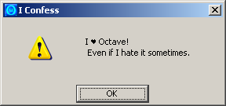
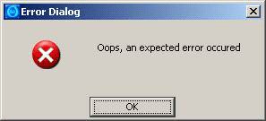
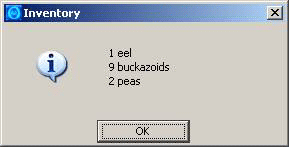
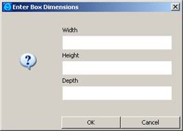
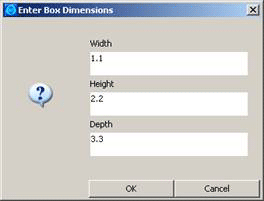
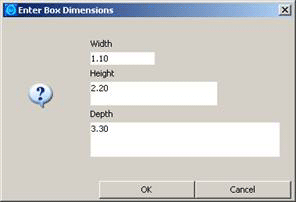
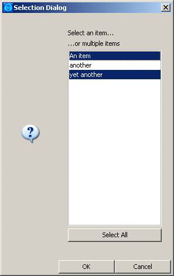

| [ < ] | [ > ] | [ << ] | [ Up ] | [ >> ] | [Top] | [Contents] | [Index] | [ ? ] |
Octave is an easy to use but powerful environment for mathematical calculations, which can easily be extended by packages. Its features are close to the commercial tool Matlab so that it can often be used as a replacement.
Java on the other hand offers a rich, object oriented and platform independent environment for many applications. The core Java classes can be easily extended by many freely available libraries.
This document refers to the package java, which is part of the
GNU Octave project. This package allows you to access Java classes from inside Octave.
Thus it is possible to use existing class files or complete Java libraries
directly from Octave.
This description is based on the Octave package java-1.2.8. The java package usually installs its script files (.m) in the directory .../share/Octave/packages/java-1.2.8 and its binary (.oct) files in .../libexec/Octave/packages/java-1.2.8.
You can get help on specific functions in Octave by executing the help command with the name of a function from this package:
Octave > help javaObject |
You can view this help file in Octave by executing the info command with just the word java:
Octave > doc java |
The java package is designed for calling Java from Octave.
If you want to call Octave from Java, you might want to use a library like
javaOctave [http://kenai.com/projects/javaOctave] or
joPas [http://jopas.sourceforge.net].
| [ < ] | [ > ] | [ << ] | [ Up ] | [ >> ] | [Top] | [Contents] | [Index] | [ ? ] |
Available Functions
| 3.1 javaclasspath | get the class path of the JVM | |
| 3.2 javaaddpath | add a path to the class path of the JVM | |
| 3.3 javarmpath | remove a path to the class path of the JVM | |
| 3.4 javamem | get information about available memory | |
| 3.5 javaArray | create a Java array | |
| 3.6 javaObject | create a Java object | |
| 3.7 java_new | create a Java object | |
| 3.8 javaMethod | invoke a method on the Java object | |
| 3.9 java_invoke | invoke a method on the Java object | |
| 3.10 java_get | get a field on the Java object | |
| 3.11 java_set | set a field on the Java object | |
| 3.12 javamethods | list the available methods of a Java objects | |
| 3.13 javafields | list the available fields of a Java objects | |
| 3.14 msgbox | display a dialog box | |
| 3.15 errordlg | display a dialog with an error symbol | |
| 3.18 listdlg | display a dialog with a selection list | |
| 3.20 warndlg | display a dialog with a warning symbol | |
| 3.16 helpdlg | display a dialog with a help symbol | |
| 3.17 inputdlg | display a dialog with edit fields | |
| 3.19 questdlg | display a dialog with a question icon |
Frequently Asked Questions
| [ < ] | [ > ] | [ << ] | [ Up ] | [ >> ] | [Top] | [Contents] | [Index] | [ ? ] |
| [ < ] | [ > ] | [ << ] | [ Up ] | [ >> ] | [Top] | [Contents] | [Index] | [ ? ] |
Return the class path of the Java virtual machine as a cell array of strings.
If called without an input parameter:
If called with a single input parameter WHAT:
For the example two entries have been added to the static classpath using the file classpath.txt.
Example:
Octave > javaclasspath('-all')
STATIC JAVA PATH
z:/someclasses.jar
z:/classdir/classfiles
DYNAMIC JAVA PATH
- empty -
Octave > javaaddpath('z:/dynamic');
Octave > ps = javaclasspath('-all')
ps =
{
[1,1] = z:/someclasses.jar
[1,2] = z:/classdir/classfiles
[1,3] = z:/dynamic
}
|
See also: javaaddpath, javarmpath, How to make Java classes available to Octave?.
| [ < ] | [ > ] | [ << ] | [ Up ] | [ >> ] | [Top] | [Contents] | [Index] | [ ? ] |
Add PATH to the dynamic class path of the Java virtual machine. PATH can be either a directory where .class files can be found, or a .jar file containing Java classes. In both cases the directory or file must exist.
Example:
This example adds a Java archive and a directory containing .class files to the classpath and displays the current classpath list.
Octave > javaaddpath('C:/java/myclasses.jar');
Octave > javaaddpath('C:/java/classes');
Octave > javaclasspath;
ans =
{
[1,1] = C:\java\myclasses.jar
[1,2] = C:\java\classes
}
|
See also: javaclasspath, javarmpath, How to make Java classes available to Octave?.
| [ < ] | [ > ] | [ << ] | [ Up ] | [ >> ] | [Top] | [Contents] | [Index] | [ ? ] |
Remove PATH from the dynamic class path of the Java virtual machine. PATH can be either a directory where .class files can be found, or a .jar file containing Java classes.
Example: This example removes one of the directories added in the example for the javaaddpath function.
Octave > javarmpath('C:/java/classes');
Octave > javaclasspath
{
[1,1] = C:\java\myclasses.jar
}
|
See also: javaaddpath, javaclasspath, How to make Java classes available to Octave?.
| [ < ] | [ > ] | [ << ] | [ Up ] | [ >> ] | [Top] | [Contents] | [Index] | [ ? ] |
Show current memory status of the java virtual machine (JVM) & run garbage collector.
When no return argument is given the info is echoed to the screen. Otherwise, cell array JMEM contains Maximum, Total, and Free memory (in bytes).
All java-based routines are run in the JVM's shared memory pool, a dedicated and separate part of memory claimed by the JVM from your computer's total memory (which comprises physical RAM and virtual memory / swap space on hard disk).
The maximum available memory can be set using the file java.opts (in the same subdirectory where javaaddpath.m lives, see
‘which javaaddpath’. Usually that is:
[/usr]/share/Octave/packages/java-1.2.8.
java.opts is a plain text file. It can contain memory related options, starting with -X.
In the following exmaple, the first line specifies the initial memory size in megabytes, the second line specifies the requested maximum size:
-Xms64m -Xmx512m |
You can adapt these values if your system has limited available physical memory. When no java.opts file is present, the default
assignments are depending on system hardware and Java version.
Typically these are an initial memory size of RAM/64 and a maximum memory size of min(RAM/4, 1GB), where RAM
is the amount of installed memory.
In the output of javamem Total memory is what the operating system has currently assigned to the JVM and depends on actual and active memory usage. Free memory is self-explanatory. During operation of java-based Octave functions the amounts of Total and Free memory will vary, due to java's own cleaning up and your operating system's memory management.
Example:
Octave > javamem
Java virtual machine (JVM) memory info:
Maximum available memory: 247 MB;
(...running garbage collector...)
OK, current status:
Total memory in virtual machine: 15 MB;
Free memory in virtual machine: 15 MB;
2 CPUs available.
Octave > [MEM] = javamem()
MEM =
{
[1,1] = 259522560
[2,1] = 16318464
[3,1] = 16085576
}
|
See also: How can I handle memory limitations?.
| [ < ] | [ > ] | [ << ] | [ Up ] | [ >> ] | [Top] | [Contents] | [Index] | [ ? ] |
Create a Java array of size [M, N, ...] with elements of class CLASS. CLASS can be a Java object representing a class or a string containing the fully qualified class name.
The generated array is uninitialized, all elements are set to null if CLASS is a reference type, or to a default value (usually 0) if CLASS is a primitive type.
Example: This example creates a (2 x 2) array of Java String objects and assigns a value to one of the elements. Finally it displays the type of a.
Octave > a = javaArray('java.lang.String', 2, 2);
Octave > a(1,1) = 'Hello';
Octave > a
a =
<Java object: java.lang.String[][]>
|
| [ < ] | [ > ] | [ << ] | [ Up ] | [ >> ] | [Top] | [Contents] | [Index] | [ ? ] |
Create a Java object of class CLASS, by calling the class constructor with the given arguments ARG1, ..., ARGN. The CLASS name should be given in fully qualified string form (including any package prefix). In Matlab you should avoid to use the import statement and the short form of object creation.
Example: This example demonstrates two ways to create a Java StringBuffer object. The first variant creates an uninitialized StringBuffer object, while the second variant calls a constructor with the given initial String. Then it displays the type of o, and finally the content of the StringBuffer object is displayed by using its toString method.
Octave > o = javaObject('java.lang.StringBuffer');
Octave > o = javaObject('java.lang.StringBuffer', 'Initial');
Octave > o
o =
<Java object: java.lang.StringBuffer>
Octave > o.toString
ans = Initial
|
Equivalent to the java_new function.
For compatibility with Matlab it is recommended to use the javaObject function.
See also: java_new.
| [ < ] | [ > ] | [ << ] | [ Up ] | [ >> ] | [Top] | [Contents] | [Index] | [ ? ] |
Create a Java object of class CLASS, by calling the class constructor with the given arguments ARG1, ..., ARGN.
Equivalent to the javaObject function.
For compatibility with Matlab it is recommended to use the javaObject function.
Example:
Octave > o = java_new('java.lang.StringBuffer', 'Initial');
Octave > o
o =
<Java object: java.lang.StringBuffer>
Octave > o.toString
ans = Initial
|
See also: javaObject.
| [ < ] | [ > ] | [ << ] | [ Up ] | [ >> ] | [Top] | [Contents] | [Index] | [ ? ] |
Invoke the method NAME on the Java object OBJECT with the arguments ARG1, ... For static methods, OBJECT can be a string representing the fully qualified name of the corresponding class. The function returns the result of the method invocation. When OBJECT is a regular Java object, the structure-like indexing can be used as a shortcut syntax. For instance, the two statements in the example are equivalent.
Example:
Octave > ret = javaMethod("method1", x, 1.0, "a string")
Octave > ret = x.method1(1.0, "a string")
|
See also: javamethods.
| [ < ] | [ > ] | [ << ] | [ Up ] | [ >> ] | [Top] | [Contents] | [Index] | [ ? ] |
Invoke the method NAME on the Java object OBJECT with the arguments ARG1, ... For static methods, OBJECT can be a string representing the fully qualified name of the corresponding class. The function returns the result of the method invocation. Equivalent to the javaMethod function. When OBJECT is a regular Java object, the structure-like indexing can be used as a shortcut syntax. For instance, the two statements in the example are equivalent.
Example:
Octave > ret = java_invoke(x, "method1", 1.0, "a string") Octave > ret = x.method1(1.0, "a string") |
See also: javamethods.
| [ < ] | [ > ] | [ << ] | [ Up ] | [ >> ] | [Top] | [Contents] | [Index] | [ ? ] |
Get the value of the field NAME of the Java object OBJECT. For static fields, OBJECT can be a string representing the fully qualified name of the corresponding class.
When OBJECT is a regular Java object, the structure-like indexing can be used as a shortcut syntax. For instance, the two statements in the example are equivalent
Example:
Octave > java_get(x, "field1") Octave > x.field1 |
See also: javafields, java_set.
| [ < ] | [ > ] | [ << ] | [ Up ] | [ >> ] | [Top] | [Contents] | [Index] | [ ? ] |
Set the value of the field NAME of the Java object OBJECT to VALUE. For static fields, OBJECT can be a string representing the fully qualified named of the corresponding Java class. When OBJECT is a regular Java object, the structure-like indexing can be used as a shortcut syntax. For instance, the two statements in the example are equivalent
Example:
Octave > java_set(x, "field1", val) Octave > x.field1 = val |
See also: javafields, java_get.
| [ < ] | [ > ] | [ << ] | [ Up ] | [ >> ] | [Top] | [Contents] | [Index] | [ ? ] |
Given a string with a Java class name CLASSNAME or a regular Java object OBJECT, this function returns a cell array containing descriptions of all methods of the Java class CLASSNAME respectively the class of OBJECT.
Examples: The first example shows how the methods of a class can be queried, while the second example works with the methods of a concrete instance of a class. Note that creation of a java.lang.Double object requires an initializer (in the example the value 1.2).
Octave > m = javamethods('java.lang.Double');
Octave > size(m)
ans =
1 30
Octave > m{7}
ans = double longBitsToDouble(long)
Octave > o = javaObject('java.lang.Double', 1.2);
Octave > m = javamethods(o);
Octave > size(m)
ans =
1 30
Octave > m{7}
ans = double longBitsToDouble(long)
|
See also: javafields, java_invoke.
| [ < ] | [ > ] | [ << ] | [ Up ] | [ >> ] | [Top] | [Contents] | [Index] | [ ? ] |
Given a string with a Java class name CLASSNAME or a regular Java object OBJECT, this function returns a cell array containing the descriptions for all fields of the Java class CLASSNAME respectively the class of OBJECT.
Examples:
The first example shows how the fields of a class can be queried without creating an instance of the class.
Octave > f = javafields('java.lang.Double');
Octave > size(f)
ans =
1 10
Octave > f{7}
ans = public static final int java.lang.Double.MAX_EXPONENT
|
The second example works with the fields of an instance of a class. Note that creation of a java.lang.Double object requires an initializer (in the example a value of 1.2 is specified).
Octave > o = javaObject('java.lang.Double', 1.2);
Octave > f = javafields(o);
Octave > size(f)
ans =
1 10
Octave > f{7}
ans = public static final int java.lang.Double.MAX_EXPONENT
|
| [ < ] | [ > ] | [ << ] | [ Up ] | [ >> ] | [Top] | [Contents] | [Index] | [ ? ] |
Displays a MESSAGE using a dialog box. The parameter TITLE can be used to optionally decorate the dialog caption.
The third optional parameter ICON can be either 'error', 'help' or 'warn'
and selectes the corresponding icon.
If it is omitted, no icon is shown.
Examples: The first example shows a dialog box without a caption text, whereas the second example specifies a caption text of its own. The third example also demonstrates how a character according to the TeX symbol set can be specified. It is important to include a space character after the symbol code and how to embed a newline character (ASCII code 10) into the string.
Octave > msgbox('This is an important message');
Octave > msgbox('Do not forget to feed the cat.', 'Remember');
Octave > msgbox(['I \heartsuit Octave!',10, ...
' Even if I hate it sometimes.'], ...
'I Confess','warn');
|

| [ < ] | [ > ] | [ << ] | [ Up ] | [ >> ] | [Top] | [Contents] | [Index] | [ ? ] |
Displays the MESSAGE using an error dialog box. The TITLE can be used optionally to decorate the dialog caption instead of the default title "Error Dialog".
Examples: The first example shows a dialog box with default caption, whereas the second example specifies a its own caption
Octave > errordlg('Oops, an expected error occured');
|

Octave > errordlg('Another error occured', 'Oops');
|
| [ < ] | [ > ] | [ << ] | [ Up ] | [ >> ] | [Top] | [Contents] | [Index] | [ ? ] |
Displays the MESSAGE using a help dialog box. The help message can consist of multiple lines, separated by a newline character. The TITLE can be used optionally to decorate the dialog caption bar instead of the default title "Help Dialog".
Examples: The first example shows a dialog box with default caption, whereas the next two examples specify their own caption. Note that if the backslash escape notation is used in a double quoted string, it is immediately replaced by Octave with a newline. If it is contained in a single quoted string, it is not replaced by Octave, but later by the dialog function.
Octave > helpdlg('This is a short notice');
Octave > helpdlg(['line #1',10,'line #2'], 'Inventory');
Octave > helpdlg("1 eel\n9 buckazoids\n2 peas", 'Inventory');
|

| [ < ] | [ > ] | [ << ] | [ Up ] | [ >> ] | [Top] | [Contents] | [Index] | [ ? ] |
Returns the user's inputs from a multi-textfield dialog box in form of a cell array of strings. If the user closed the dialog with the Cancel button, en empty cell array is returned. This can be checked with the isempty function. The first argument PROMPT is mandatory. It is a cell array with strings labeling each text field. The optional string TITLE can be used as the caption of the dialog. The size of the text fields can be defined by the argument ROWSCOLS, which can be either a scalar to define the number of columns used for each text field, a vector to define the number of rows for each text field individually, or a matrix to define the number of rows and columns for each text field individually. It is possible to place default values into the text fields by supplying a cell array of strings for the argument DEFAULTS.
Examples: The first example shows a simple usage of the input dialog box without defaults.
Octave > prompt = {'Width','Height','Depth'};
Octave > dims = inputdlg(prompt, 'Enter Box Dimensions');
Octave > volume = str2num(dims{1}) * ...
str2num(dims{2}) * str2num(dims{3});
|

The second example shows the application of a scalar for the number of rows and a cell array with default values.
Octave > prompt = {'Width', 'Height', 'Depth'};
Octave > defaults = {'1.1', '2.2', '3.3'};
Octave > title = 'Enter Box Dimensions';
Octave > dims = inputdlg(prompt, title, 1, defaults);
Octave > dims
dims =
{
[1,1] = 1.1
[2,1] = 2.2
[3,1] = 3.3
}
|

The third example shows the application of row height and column width specification..
Octave > prompt = {'Width', 'Height', 'Depth'};
Octave > defaults = {'1.1', '2.2', '3.3'};
Octave > rc = [1,10; 2,20; 3,30];
Octave > title = 'Enter Box Dimensions';
Octave > dims = inputdlg(prompt, title, rc, defaults);
|

| [ < ] | [ > ] | [ << ] | [ Up ] | [ >> ] | [Top] | [Contents] | [Index] | [ ? ] |
This function returns the inputs from a list dialog box. The result is returned as a vector of indices and a flag. The vector SEL contains the 1-based indices of all list items selected by the user. The flag OK is 1 if the user closed the dialog with the OK Button, otherwise it is 0 and SEL is empty.. The arguments of this function are specified in the form of KEY, VALUE pairs. At least the 'ListString' argument pair must be specified. It is also possible to preselect items in the list in order to provide a default selection.
The KEY and VALUE pairs can be selected from the following list:
ListStringa cell array of strings comprising the content of the list.
SelectionModecan be either 'single' or 'multiple'.
ListSizea vector with two elements [width, height] defining the size of the list field in pixels.
InitialValuea vector containing 1-based indices of preselected elements.
Namea string to be used as the dialog caption.
PromptStringa cell array of strings to be displayed above the list field.
OKStringa string used to label the OK button.
CancelStringa string used to label the Cancel button.
Example:
Octave > [s,ok] = listdlg('ListString', ...
{'An item', 'another', 'yet another'}, ...
'Name', 'Selection Dialog', ...
'SelectionMode', 'Multiple', ...
'PromptString',['Select an item...',10,'...or multiple items']);
Octave > imax = length(s);
Octave > for i=1:1:imax
Octave > disp(s(i));
Octave > end
|

| [ < ] | [ > ] | [ << ] | [ Up ] | [ >> ] | [Top] | [Contents] | [Index] | [ ? ] |
Displays the MESSAGE using a question dialog box with a caption TITLE. The dialog contains two or three buttons which all close the dialog. It returns the caption of the activated button.
If only MESSAGE and TITLE are specified, three buttons with the default captions "Yes", "No", "Cancel" are used. The string DEFAULT identifies the default button, which is activated by pressing the ENTER key. It must match one of the strings given in BTN1, BTN2 or BTN3. If only two button captions BTN1 and BTN2 are specified, the dialog will have only these two buttons.
Examples: The first example shows a dialog box with two buttons, whereas the next example demonstrates the use of three buttons.
Octave > questdlg('Select your gender', 'Sex', ...
'Male', 'Female', 'Female');
|
Octave > questdlg('Select your gender', 'Sex', ...
'Male', 'dont know', 'Female', 'Female');
|
| [ < ] | [ > ] | [ << ] | [ Up ] | [ >> ] | [Top] | [Contents] | [Index] | [ ? ] |
Displays a MESSAGE using a warning dialog box. The TITLE can be used optionally to decorate the dialog caption instead of the default title "Warning Dialog".
Examples: The first example shows a dialog box with default caption, whereas the second example specifies a caption text of its own. The second example also demonstrates how a character according to the TeX symbol set can be specified. It is important to include a space character after the symbol code. The \n character can be used to start a new line. The third example shows an alternate way to embed the newline character (the newline character has the ASCII code 10) into the string. Please refer to the Octave manual for the difference between single and double quoted strings.
Octave > warndlg('An expected warning occured');
Octave > warndlg('I \heartsuit Octave!\nEven if I hate her sometimes.', ...
'Confession');
Octave > warndlg(['I \heartsuit Octave!',10, ...
' Even if I hate her sometimes.'], ...
'I Confess');
|
| [ < ] | [ > ] | [ << ] | [ Up ] | [ >> ] | [Top] | [Contents] | [Index] | [ ? ] |
| [ < ] | [ > ] | [ << ] | [ Up ] | [ >> ] | [Top] | [Contents] | [Index] | [ ? ] |
Octave and Matlab are very similar, but handle Java slightly different. Therefore it may be necessary to detect the environment and use the appropriate functions. The following function can be used to detect the environment. Due to the persistent variable it can be called repeatedly without a heavy performance hit.
Example:
%%
%% Return: true if the environment is Octave.
%%
function ret = isOctave
persistent retval; % speeds up repeated calls
if isempty(retval)
retval = (exist('OCTAVE_VERSION','builtin') > 0);
end
ret = retval;
end
|
| [ < ] | [ > ] | [ << ] | [ Up ] | [ >> ] | [Top] | [Contents] | [Index] | [ ? ] |
Java finds classes by searching a classpath. This is a list of Java archive files and/or directories containing class files. In Octave and Matlab the classpath is composed of two parts:
Octave searches the static classpath first, then the dynamic classpath.
Classes appearing in the static as well as in the dynamic classpath will therefore be found in the static classpath and loaded from this location.
Classes which shall be used regularly or must be available to all users should be added to the static classpath.
The static classpath is populated once from the contents of a plain text file named classpath.txt when the Java Virtual Machine starts. This file contains one line for each individual classpath to be added to the static classpath.
These lines can identify single class files, directories containing class files or Java archives with complete class file hierarchies.
Comment lines starting with a # or a % character are ignored.
The search rules for the file classpath.txt are:
classpath.txt in your home directory,
If such a file is found, it is read and defines the initial static classpath.
Thus it is possible to build an initial static classpath on a 'per user' basis.
classpath.txt in the package installation directory.
This is where javaclasspath.m resides, usually something like ...\share\Octave\packages\java-1.2.8.
You can find this directory by executing the command
pkg list |
If this file exists, its contents is also appended to the static classpath. Note that the archives and class directories defined in this file will affect all users.
Classes which are used only by a specific script should be placed in the dynamic classpath. This portion of the classpath can be modified at runtime using the javaaddpath and javarmpath functions.
Example:
Octave > base_path = 'C:/Octave/java_files';
Octave > % add two JARchives to the dynamic classpath
Octave > javaaddpath([base_path, '/someclasses.jar']);
Octave > javaaddpath([base_path, '/moreclasses.jar']);
Octave > % check the dynamic classpath
Octave > p = javaclasspath;
Octave > disp(p{1});
C:/Octave/java_files/someclasses.jar
Octave > disp(p{2});
C:/Octave/java_files/moreclasses.jar
Octave > % remove the first element from the classpath
Octave > javarmpath([base_path, '/someclasses.jar']);
Octave > p = javaclasspath;
Octave > disp(p{1});
C:/Octave/java_files/moreclasses.jar
Octave > % provoke an error
Octave > disp(p{2});
error: A(I): Index exceeds matrix dimension.
|
Another way to add files to the dynamic classpath exclusively for your user account is to use the file .octaverc which is stored in your home directory.
All Octave commands in this file are executed each time you start a new instance of Octave.
The following example adds the directory octave to Octave's search path and
the archive myclasses.jar in this directory to the Java search path.
% content of .octaverc:
addpath('~/octave');
javaaddpath('~/octave/myclasses.jar');
|
| [ < ] | [ > ] | [ << ] | [ Up ] | [ >> ] | [Top] | [Contents] | [Index] | [ ? ] |
If your code shall work under Octave as well as Matlab you should use the function javaObject to create Java objects. The function java_new is Octave specific and does not exist in the Matlab environment.
Example 1, suitable for Octave but not for Matlab:
Passenger = java_new('package.FirstClass', row, seat);
|
Example 2, which works in Octave as well as in Matlab:
Passenger = javaObject('package.FirstClass', row, seat);
|
| [ < ] | [ > ] | [ << ] | [ Up ] | [ >> ] | [Top] | [Contents] | [Index] | [ ? ] |
In order to execute Java code Octave creates a Java Virtual Machine (JVM). Such a JVM allocates a fixed amount of initial memory and may expand this pool up to a fixed maximum memory limit. The default values depend on the Java version (see javamem). The memory pool is shared by all Java objects running in the JVM. This strict memory limit is intended mainly to avoid that runaway applications inside web browsers or in enterprise servers can consume all memory and crash the system. When the maximum memory limit is hit, Java code will throw exceptions so that applications will fail or behave unexpectedly.
In Octave as well as in Matlab, you can specify options for the creation of the JVM inside a file named java.opts.
This is a text file where you can enter lines containing -X and -D options handed to the JVM during initialization.
In Octave, the Java options file must be located in the directory where javaclasspath.m resides, i.e. the package installation directory, usually something like ...\share\Octave\packages\java-1.2.8. You can find this directory by executing
pkg list |
In Matlab, the options file goes into the MATLABROOT/bin/ARCH directory or in your personal Matlab startup directory (can be determined by a ‘pwd’ command). MATLABROOT is the Matlab root directory and ARCH is your system architecture, which you find by issuing the commands ‘matlabroot’ respectively ‘computer('arch')’.
The -X options allow you to increase the maximum amount of memory available to the JVM to 256 Megabytes by adding the following line to the java.opts file:
-Xmx256m |
The maximum possible amount of memory depends on your system. On a Windows system with 2 Gigabytes main memory you should be able to set this maximum to about 1 Gigabyte.
If your application requires a large amount of memory from the beginning, you can also specify the initial amount of memory allocated to the JVM. Adding the following line to the java.opts file starts the JVM with 64 Megabytes of initial memory:
-Xms64m |
For more details on the available -X options of your Java Virtual Machine issue the command ‘java -X’ at the operating system command prompt and consult the Java documentation.
The -D options can be used to define system properties which can then be used by Java classes inside Octave. System properties can be retrieved by using the getProperty() methods of the java.lang.System class. The following example line defines the property MyProperty and assigns it the string 12.34.
-DMyProperty=12.34 |
The value of this property can then be retrieved as a string by a Java object or in Octave:
Octave > javaMethod('java.lang.System', 'getProperty', 'MyProperty');
ans = 12.34
|
See also: javamem.
| [ < ] | [ > ] | [ << ] | [ Up ] | [ >> ] | [Top] | [Contents] | [Index] | [ ? ] |
Most Octave installations come with the java package pre-installed. In case you want to replace this package with a more recent version, you must perform the following steps:
| [ < ] | [ > ] | [ << ] | [ Up ] | [ >> ] | [Top] | [Contents] | [Index] | [ ? ] |
Check whether the java package is already installed by issuing
the pkg list command:
Octave > pkg list
Package Name | Version | Installation directory
--------------+---------+-----------------------
java *| 1.2.8 | /home/octavio/octave/java-1.2.8
Octave >
|
If the java package appears in the list you must uninstall it first by issuing the command
Octave > pkg uninstall java Octave > pkg list |
Now the java package should not be listed anymore. If you have used the java package during the current session of Octave, you have to exit and restart Octave before you can uninstall the package. This is because the system keeps certain libraries in memory after they have been loaded once.
| [ < ] | [ > ] | [ << ] | [ Up ] | [ >> ] | [Top] | [Contents] | [Index] | [ ? ] |
The installation process requires that the environment variable JAVA_HOME points to the Java Development Kit (JDK) on your computer.
Set the environment variable JAVA_HOME according to your local JDK installation. Please adapt the path in the following examples according to the JDK installation on your system.
If you are using a Windows system that might be:
Octave > setenv("JAVA_HOME","C:/Java/jdk1.6.0_21");
|
If you are using a Linux system this would look probably more like:
Octave > setenv("JAVA_HOME","/usr/local/jdk1.6.0_21");
|
Note, that on all systems you must use the forward slash '/' as the separator, not the backslash '\'.
If on a Windows system the environment variable JAVA_HOME is already defined using the backslash, you can easily change this by issuing the following Octave command before starting the installation:
Octave > setenv('JAVA_HOME',strrep(getenv('JAVA_HOME'),'\','/'))
|
| [ < ] | [ > ] | [ << ] | [ Up ] | [ >> ] | [Top] | [Contents] | [Index] | [ ? ] |
If you have for example saved the package archive on your z: drive the command would be:
Octave> pkg install -verbose z:/java-1.2.8.tar.gz |
or if you have Linux and the package file is stored in your home directory:
Octave > pkg install -verbose ~/java-1.2.8.tar.gz |
The option -verbose will produce some lengthy output, which should not show any errors
(maybe a few warnings at best).
You can then produce a list of all installed packages:
Octave > pkg list |
This list of packages should now include the package java:
Octave > pkg list
Package Name | Version | Installation directory
--------------+---------+-----------------------
java *| 1.2.8 | /home/octavio/octave/java-1.2.8
Octave >
|
| [ < ] | [ > ] | [ << ] | [ Up ] | [ >> ] | [Top] | [Contents] | [Index] | [ ? ] |
The following code creates a Java string object, which however is automatically converted to an Octave string:
Octave > s = javaObject('java.lang.String', 'Hello OctaveString')
s = Hello OctaveString
|
Note that the java package automatically transforms the Java String object to an Octave string. This means that you cannot apply Java String methods to the result.
This "auto boxing" scheme seems to be implemented for the following Java classes:
If you instead create an object for which no "auto-boxing" is implemented, javaObject returns the genuine Java object:
Octave > v = javaObject('java.util.Vector')
v =
<Java object: java.util.Vector>
Octave > v.add(12);
Octave > v.get(0)
ans = 12
|
If you have created such a Java object, you can apply all methods of the Java class to the returned object. Note also that for some objects you must specify an initializer:
% not:
Octave > d = javaObject('java.lang.Double')
error: [java] java.lang.NoSuchMethodException: java.lang.Double
% but:
Octave > d = javaObject('java.lang.Double',12.34)
d = 12.340
|
| [ < ] | [ > ] | [ << ] | [ Up ] | [ >> ] | [Top] | [Contents] | [Index] | [ ? ] |
The dialog functions contain a translation table for TeX like symbol codes. Thus messages and labels can be tailored to show some common mathematical symbols or Greek characters. No further TeX formatting codes are supported. The characters are translated to their Unicode equivalent. However, not all characters may be displayable on your system. This depends on the font used by the Java system on your computer.
Each TeX symbol code must be terminated by a space character to make it distinguishable from the surrounding text. Therefore the string ‘\alpha =12.0’ will produce the desired result, whereas ‘\alpha=12.0’ would produce the literal text '\alpha=12.0'.
See also: errordlg, helpdlg, inputdlg, listdlg, msgbox, questdlg, warndlg.
The table below shows each TeX character code and the corresponding Unicode character:
\alpha | 'α' | \beta | 'β' | \gamma | 'γ' | ||
\delta | 'δ' | \epsilon | 'ε' | \zeta | 'ζ' | ||
\eta | 'η' | \theta | 'θ' | \vartheta | 'ϑ' | ||
\iota | 'ι' | \kappa | 'κ' | \lambda | 'λ' | ||
\mu | 'μ' | \nu | 'ν' | \xi | 'ξ' | ||
\pi | 'π' | \rho | 'ρ' | \sigma | 'σ' | ||
\varsigma | 'ς' | \tau | 'τ' | \phi | 'φ' | ||
\chi | 'χ' | \psi | 'ψ' | \omega | 'ω' | ||
\upsilon | 'υ' | \Gamma | 'Γ' | \Delta | 'Δ' | ||
\Theta | 'Θ' | \Lambda | 'Λ' | \Pi | 'Π' | ||
\Xi | 'Ξ' | \Sigma | 'Σ' | \Upsilon | 'Υ' | ||
\Phi | 'Φ' | \Psi | 'Ψ' | \Omega | 'Ω' | ||
\Im | 'ℑ' | \Re | 'ℜ' | \leq | '≤' | ||
\geq | '≥' | \neq | '≠' | \pm | '±' | ||
\infty | '∞' | \partial | '∂' | \approx | '≈' | ||
\circ | '∘' | \bullet | '•' | \times | '×' | ||
\sim | '~' | \nabla | '∇' | \ldots | '…' | ||
\exists | '∃' | \neg | '¬' | \aleph | 'ℵ' | ||
\forall | '∀' | \cong | '≅' | \wp | '℘' | ||
\propto | '∝' | \otimes | '⊗' | \oplus | '⊕' | ||
\oslash | '⊘' | \cap | '∩' | \cup | '∪' | ||
\ni | '∋' | \in | '∈' | \div | '÷' | ||
\equiv | '≡' | \int | '∫' | \perp | '⊥' | ||
\wedge | '∧' | \vee | '∨' | \supseteq | '⊇' | ||
\supset | '⊃' | \subseteq | '⊆' | \subset | '⊂' | ||
\clubsuit | '♣' | \spadesuit | '♠' | \heartsuit | '♥' | ||
\diamondsuit | '♦' | \copyright | '©' | \leftarrow | '←' | ||
\uparrow | '↑' | \rightarrow | '→' | \downarrow | '↓' | ||
\leftrightarrow | '↔' | \updownarrow | '↕' |
Table: TeX character codes and the resulting symbols.
| [ < ] | [ > ] | [ << ] | [ Up ] | [ >> ] | [Top] | [Contents] | [Index] | [ ? ] |
| Jump to: | A C D F I J M O P S T U |
|---|
| Jump to: | A C D F I J M O P S T U |
|---|
| [Top] | [Contents] | [Index] | [ ? ] |
This document was generated by Martin Hepperle on June, 12 2011 using texi2html 1.78.
The buttons in the navigation panels have the following meaning:
| Button | Name | Go to | From 1.2.3 go to |
|---|---|---|---|
| [ < ] | Back | Previous section in reading order | 1.2.2 |
| [ > ] | Forward | Next section in reading order | 1.2.4 |
| [ << ] | FastBack | Beginning of this chapter or previous chapter | 1 |
| [ Up ] | Up | Up section | 1.2 |
| [ >> ] | FastForward | Next chapter | 2 |
| [Top] | Top | Cover (top) of document | |
| [Contents] | Contents | Table of contents | |
| [Index] | Index | Index | |
| [ ? ] | About | About (help) |
where the Example assumes that the current position is at Subsubsection One-Two-Three of a document of the following structure:
This document was generated by Martin Hepperle on June, 12 2011 using texi2html 1.78.